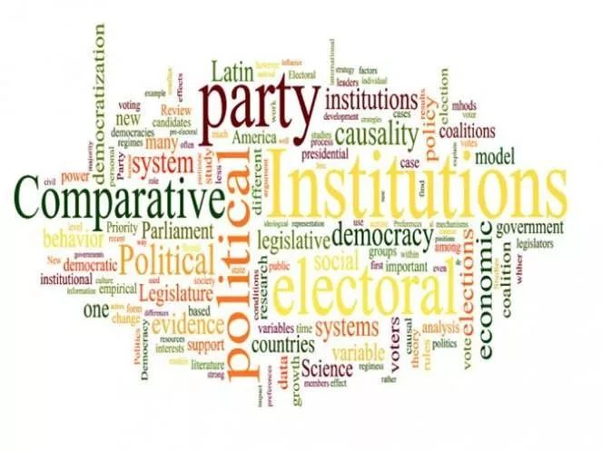
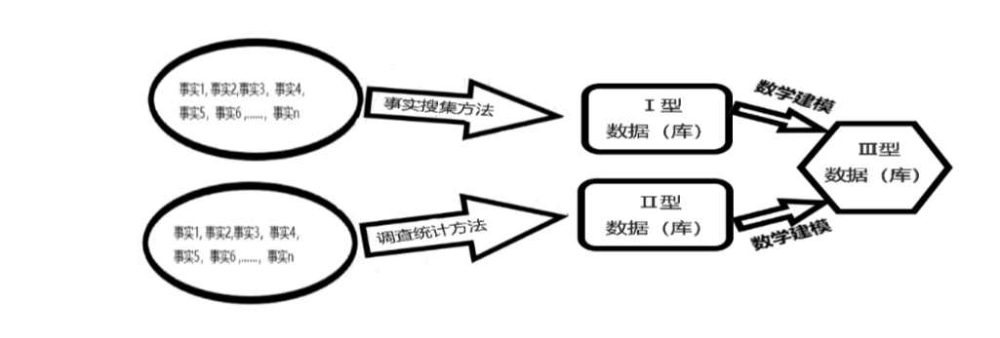
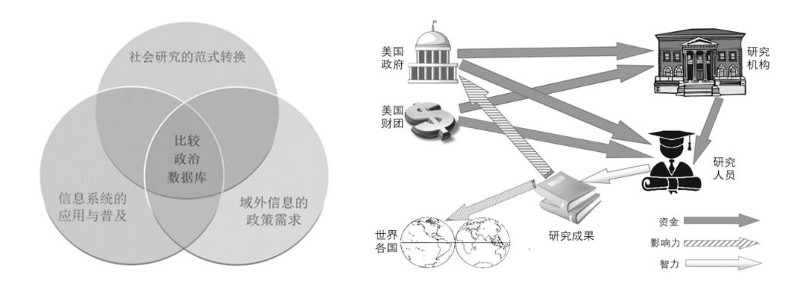
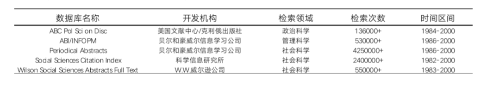
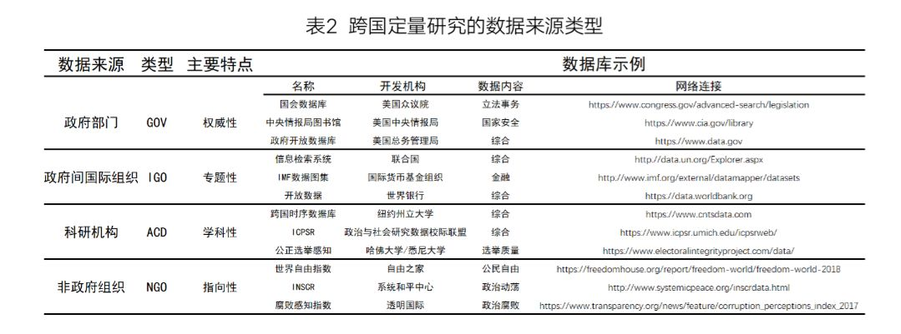
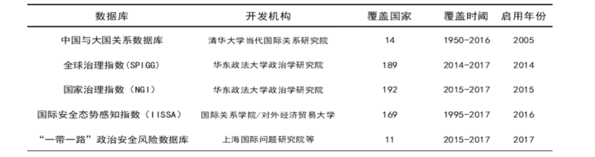

收录于合集

作品简介
【作者】 程同顺，南开大学周恩来政府管理学院教授、博士生导师、副院长; 李畅，南开大学政治学博士。
【编辑】 赵怡雯
【 来源】《学海》2019年第5期
期刊介绍
《学海》(双月刊)是江苏省社会科学院主办、国内外公开发行的大型综合性学术刊物，全国中文核心期刊，CSSCI来源期刊，中国人文社会科学核心期刊。
内容提要
数据是开展跨国定量研究的前提与基础，深入理解数据资源有助于提升科研层次。本文首先辨析了社会科学中数据资源生成的三种路径，并通过回溯跨国研究数据库的建构时序，确认研究范式科学化、域外信息需求扩大化以及信息技术普及化是其出现的三个基本条件。文章还梳理了跨国定量研究数据使用的四个来源，即政府部门、政府间国际组织、科研机构和非政府组织。最后，作者对当前跨国定量研究中数据资源及利用中的不足进行反思。
关键词： 比较政治；跨国研究；定量方法；数据

正 文
近年来，中国政治学界的一个显著趋势是比较政治研究的兴起，具体表现为该领域研究队伍不断壮大，研究成果日渐丰硕。与此密切相关的另一趋势则是研究方法的多样化，其标志是学者们使用定量方法更加娴熟，研究议题丰富多样，研究设计更为精致。然而，一个与上述趋势相违和的现实同样值得关注，即我国政治学界对驱动比较政治定量研究发展的重要因素——数据及数据库——的探讨并不充分。从现有文献来看，相关研究寥寥数篇，且研究重点多集中于介绍数据资源的应用，对研究数据的本身研究相对有限。方兴未艾的中国比较政治学向纵深发展，特别是定量研究方法不断完善，要求我们深刻理解并反思研究领域中的数据。本文有意在前人研究成果的基础之上，对跨国定量研究领域中的数据资源及相关议题进行探讨。
一、 社会科学研究中数据资源及其生成路径 ****
回顾社会发展史，我们不难发现“数据”概念形成于人类认识并改造客观世界的过程中。在改造自然的实践中提取数据最早也是最简便有效的方法，就是通过对客观事实进行抽象处理并进行简单加减乘除运算来实现的。据考证，在中国古代，先贤们将这种方法名之“算学”，并总结成《周髀算经》、《九章算术》等算学经典传于后世，并远播朝鲜、日本等地。而在彼时西方世界，这门“计算的艺术”最初被古希腊人称之 λογιστική ，其后古罗马人将其转写为 logistikē ，现代英语中作logistic，该词包涵从普遍事物中抽象出本质及计算之意。 这种事实搜集方法因其简便易行而广泛应用于人类社会生产、生活的各个领域，本文探讨比较政治研究同样不外于此，例如各国政府定期公布的国民经济社会生活类指数皆属此列。事实搜集方法因其出现最早、操作简易且应用广泛，本文将通过此类方法获取的数据定为Ⅰ型数据，其数据集合为Ⅰ型数据库。人类对客观世界的改造伴随着对认识工具的改造，算学从最初仅是搜集客观事实，发展成系统全面的统计科学。饶有意味的是，这门关于认识客观现象总体数量特征和数量关系的数据科学与政治有着深刻渊源。现代意义上的统计学（ statistics ），最初由德国哲学家哥特弗莱德 · 阿亨瓦尔（ Gottfried Achenwall ）创设，其德文为 statistik ，取拉丁语 statista （政治家、国民）之词根stat-，意为“研究国家相关事务的学问”，其后经长期演变发展成为涵盖收集、整理及分析数据方法的综合性名词。工业革命的成功使人类对自身理性信心大增，也驱使其渴望探索更遥远的未知之境，但碍时空之限一时难览其全貌，调查统计方法成为认识复杂事实的捷径。当前比较政治领域中，使用的不少数据都是由此方法产生，例如通过抽样方法（ sampling methods ）获取某国全体国民的政治态度分布、宗教信徒数量等。由此途径产生的数据，本文称之为Ⅱ型数据，其数据集合即Ⅱ型数据库。人类在改造客观世界的同时，主观世界里的各种观念也不断地被破除、建构以及改造。特别是在欧洲文艺复兴和思想启蒙运动过后，自由、平等、法治、正义等种种复杂而精致的概念被各国各民族所接受。人类渴望将各种主观存在的观念同样抽象成客观数据，却不能简单运用事实搜集和调查统计方法获得，而是要借助更为复杂的数学建模方法（ Methods of Mathematical Modeling ）。数学建模方法就是运用数据与特定数学模型相结合解决实际生活中的具体问题，由此生成的数据即为Ⅲ型数据，其数据库为Ⅲ型数据库。相比前两种，Ⅲ型数据的生成难度显然高出不少，其决定因素主要是取决于数学模型的复杂程度。在比较政治领域中Ⅲ型数据并不鲜见，比如世界银行开发的世界治理指数（ Worldwide Governance Index, WGI ）即为一例，数据库中的六个一级指标由32个二级指标聚类形成。本章运用实践论、认识论以及词源分析方法对“数据”进行考察，依其生成路径不同类别出Ⅰ型、Ⅱ型、Ⅲ型数据，并辨析了三者之间的关系。（详见图1）在对数据进行纯学理分析之后，本文将依据时间序列探讨跨国研究数据库建构的三个基本条件。
图1 社会科学研究中数据资源的生成路径及类型
二、 跨国研究中数据整合的三个基本条件 ****
半个世纪来，以美国社会科学界为先导，不少国家开始注重将零散的数据资源整合成具有特定指向的数据库，服务于为研究和决策部门。数据库出现的原因既是历史的，又是具体的，本文认为，完全意义的比较政治数据库的出现在时间序列上必须满足三个基本条件，即要社会研究范式科学化的学科条件、域外信息需求扩大化的政治条件以及信息技术普及化的技术条件。本章将分别对此三个条件进行探讨。 （一）学科条件： 社会研究范式转变及其认识论基础 比较政治数据库建立的首要条件源于近代政治学研究范式的转变，具体体现为从应然推断转向实然分析，从宏观概括转向中、微观描述，从捍卫信仰转向扩展知识，从论证假想转向总结经验，从回溯历史转向关照现实。概而言之，这一转变是从哲学（及神学）探讨向科学研究过渡。研究方法的改进为学科发展提供了强劲动力，政治学研究范式科学转向的重大意义，应放在政治学科发展史中加以理解。尽管当代人发现早在古代希腊，柏拉图、亚里士多德等先贤在论述政治问题时已经部分运用了科学方法，但在自然科学尚无重大突破的时代，对人类社会的研究远谈不上科学和规范。欧洲进入中世纪后，古希腊的科学精神逐渐被晦涩冗杂的基督教经文所掩埋，时间持续千年之久。其后的文艺复兴时期，科学精神在欧洲知识分子的意识中复苏，斯宾诺莎和霍布斯等人成为尝试用科学方法研究社会的时代先锋，他们坚信数学——几何学方法可以应用在政治分析之中，但就政治学的发展阶段而言，其特征仍是“哲学家论述政治问题”。囿于研究方法之陈旧、简陋，那个时代既无政治科学，更无政治学科。文艺复兴与启蒙运动后，自然科学的进步造就了工业革命的成功。科技进步极大提高了欧洲人的生产、生活水平，更给予知识分子以巨大的精神力量。法国的孔德和英国的密尔、斯宾塞等哲学家旗帜鲜明地倡导运用实证主义原则进行社会研究，坚决摒弃类似神学的那种寻求终极教条却不可证明的无益探讨以及辩证法中的那种模棱两可、似是而非的认知路径，以可观察、可实验的事实及知识为内容，积极借鉴物理学、生物学等自然学科的研究方法，去获得探索对人类有实际益处的社会知识。发轫于西欧的实证主义思潮在大西洋彼岸同样引起了共鸣。建国后的美国知识界深受英伦学术传统影响，研究方法仍是哲学思辨式的。作为新兴民族，美利坚天然带有一种区别于欧陆那种陈腐、守旧的行事作风，特别在北方的工商业权力集团一举击败南方保守势力后，很快进入高速发展的阶段，各行各业欣欣向荣，国民精神振奋乐观。知识界同样不例外，以社会为研究对象的经济学、社会学等纷纷尝试以实证原则为哲学基础，偏重数量分析的新颖研究范式获得了成功。美国政治学界正是在这样的时代背景下，以创新研究方法为内核，以革除政治弊病、促进社会福利为指向，开始了政治研究由传统向现代的转型。回溯这段历史，我们发现尽管政治学研究范式的转向遭致方法论保守派的批评，但从伯吉斯( J.W.Burgess )、威尔逊( T.W.Wilson )等倡导的研究主题与方法多样化开始，至梅里亚姆（ C.E.Merriam ）领导下“芝加哥学派”取得丰硕成果，再到其后该学派成员“携带行为主义的种子”散射全美各知名高校，政治学研究范式完成了哲学向科学的转向。至此，政治科学（ political science ）发展史上“第一波高峰”过去，其后“第二波高峰”则是新型研究范式随美国影响力日增扩散至海外各地。 （二）政治条件： 基于对抗与合作的域外信息需求扩大化 比较政治数据库兴起的首要条件——以政治为研究对象的学科性条件——强调的是人类思想中的认识路径转轨，第二个条件——政治条件——则具有明显的时代特征，即世界反法西斯战争胜利后，以美苏冷战为主要特征的国际政治格局更多地在“比较”层面提出建设涵盖多个国家、多重政治指标数据库的必要性。早在古希腊时代的《理想国》、《希腊政治》等先贤名著中，比较研究方法就屡见不鲜，给予后世学者巨大启发。但直至近代，比较分析法（ Method of Comparative Analysis ）才在学科自觉的意义上成为社会科学方法论中最为重要的工具之一，它不仅适用于定性研究中的案例研究（ Case Study ），还应用于定量研究中大样本（ Large-N ）的群体间研究，这种研究方法的普及极大推动了社科各领域的繁荣和发展。然而，第二次世界大战中以及其后的美苏冷战中，美国学界持续积累各国政治数据的初衷并非是服务学术中的“比较”研究，其主要目的是急于掌握其他国家公开或半公开的情报信息，带有极强的功利性。由于建国后长期奉行孤立主义（ isolationism ）外交政策，太平洋战争开启后美国高层深感对域外所知有限，立即下令鼓励社科各领域学者抓紧研究敌对国家，以便准确研判国际局势，美国学者鲁思·本尼迪克特（ Ruth Benedict ）所著的《菊花与刀》（ The Chrysanthemum and the Sword ）正是这一时期的佳作之一。二战结束后，美国担心共产主义势力在欧美以外的地区进行“渗透”和“赤化”，一方面加紧签署安保条约，建立协防机制；另一方面积极推动学界进行地区研究，实时掌握地区动态，以实现防共、限共之目的。早在1946年康奈尔大学远东研究学部（ Department of Far Eastern Studies ）设置了侧重于政治领域分析的“印度研究计划”和“东南亚研究计划”，其中后者涵盖了区域内文莱以外的所有国家。1950年，约翰·霍普金斯大学将外交官教育基金会（ Foreign Service Educational Foundation ）作为研究机构并入校内，将其研究重心投射在非洲、近东和东亚三个地区。为加强东亚地区的研究力量，该研究院还在缅甸的仰光和印度尼西亚的日惹( Yogyakarta )建立分部,对所在国进行实地研究。加利福尼亚大学伯克利分校( U.C.,Berkelay )于1955年成立了国际问题研究所（ Institute of International Studies ），并下设“拉丁美洲研究中心”、“斯拉夫研究中心”和“亚洲研究中心”三个机构。此外，美国国务院、国防部等政府机关还或明或暗地向大学、智库等研究部门拨款，其条件是所在单位的研究人员与政府共享资讯，并为政府制定政策提供理论支撑与趋势预判。众所周知的事实便是兰德公司（ RAND: Research and Development ）在美国空军的支持下发展壮大，最终成为汇集了全球顶级安全分析专家的专业智库。 另外，S·亨廷顿等不少政治学人“在出版学术成果时得到了中央情报局等单位的资助。”在美国，两大政党充当工商业财团利益代言人早已是世所共知的“秘密”，政、商两界在重大决策上天然地保持高度统一。在特定情况下，实力雄厚的财团会绕过政府，以其下属基金会的名义资助研究机构或直接支持某些学者开展海外地区研究。1952年，福特基金会一次性资助芝加哥大学“经济发展与文化改革研究中心”（ Research Center in Economic Development and Cultural Change ）学者4万美元用于印度研究。不少研究人员获得经费支持后，亲赴目标国调研，在一手研究资料基础上取得了高质量的研究成果。学者的研究成果除以内部报告的形式对政府建言献策，还借以学术成果的形式影响其他国家的发展路向。（详见图3）

图2 比较政治数据库三要素韦恩图
图3 美国官方、财团及研究机构协作图
需要指出的是，尽管上述的国情信息常常被称为“政治数据”（ Political Data ），但事实上，此处的“政治”是广义的政治，它仅意味着搜集信息的主要目的是服务核心领导层进行决策，信息内容则涉及目标国家（或政府）的方方面面。在安全领域，数据指标可能涉及武装力量的人数、常规武器装备水平、核弹数量、军费负担指数、盟国数量等；在经济领域，数据指标可能涉及劳动人口数量、国民受教育程度、装备制造业生产水平、（人均）国民生产总值等；在（狭义的）政治领域，数据指标可能涉及政体性质、领导人任期、极端政党数量、国民意识形态分布、恐怖主义组织数量等。尽管对某些数据指标的搜集与统计其技术门槛并不高，但如果能在固定时长（通常为一年，特定情况下也以半年度、季度、月度等计算）中稳定呈现出来，其政治效用及社会效用将十分显著。 （三）技术条件： 信息技术的进步与数据共享的兴起 战争的吊诡之处在于它不仅意味着破坏与毁灭，同时还孕育着推动社会进步的新鲜事物，作为战争特殊形态的冷战（ The Cold War ）也不外于此。比较政治数据库最后一个条件——互联网的出现——同样离不开美苏对峙的时代背景。直接导致互联网出现的是发生于1962年的古巴导弹危机，尽管核爆悲剧并未发生，但在危机应对中美国国防部发现了自身足以致命的软肋：倘若唯一的指令发布中心被核武摧毁，那么全美乃至全球的美军力量将立即瘫痪。五角大楼经研究决意建设一个点状分布的指挥系统，它由遍布全球的多个指挥站点组成，其间保持即时通信状态，即便美军最高指挥中心遭到核打击，其他站点仍能发布反击指令。1968年，隶属军方高等研究计划署（A dvanced Research Projects Agency ，简称 ARPA ）的科学家们开发出内部信息交互网络，又称“阿帕网”（ARPA- net）。至1979年，不少民用网络陆续并入阿帕网，互联网成型并得到迅速发展，其性质都从军用转为民用，用户范围从北美扩展至全球各地。阿帕网“军转民”之后，网络技术的进步让社会各界眼睛为之一亮，各行各业争先恐后地要求搭乘这列飞驰的科技快车进入信息时代。“人口数据、消费价格指数、破解公共问题的对策、现时及回顾性文章标题，乃至《华尔街日报》的新闻头条和《哈佛商业评论》的全部文章——凡能接入互联网端口的用户都可访问内容不断扩展的在线数据库”。本文未能获取当前流行的大型比较政治数据库何时上线的详细信息，但查询到与此相近的美国五个主要的社会科学（包含政治科学）检索系统上线后至本世纪初期这一时段内的被访问情况。贝尔和豪威尔信息学习公司开发的期刊摘要数据库（ Periodical Abstracts ）自1986年接入互联网后，被访问量超过4250000次。科学信息研究所开发的社会科学引用检索数据库（ Social Science Citation Index，SSCI ）自1982年上线（on- line）后，其受访问量超过240000次。美国文献中心与克利俄出版社（ ABC/CLIO ）开发了搜索效率更高且能够上线的政治科学检索数据库，仅16年间受访次数就逾136000次。（详见表1）考虑到当时全球范围内计算机数量不多、互联网软硬件不成熟及接入端口稀缺等限制性因素，如此数量的访问记录预示了数据库的重要作用及其光明的未来前景。21世纪以来，信息产业快速发展，海量存储、开源架构、实时交互等多点突破为知识界的信息情报共享奠定了坚实的技术基础。今天的跨国定量研究领域，网络检索已占据数据获取路径的主流位置，这一比例在可预见的未来还将持续扩大。
表1 美国主要社会科学文献数据库检索状况列表（截至2000年）

三、 跨国定量研究数据资源的获取路径 ****
寻找研究所需数据是从事跨国定量研究过程中最具挑战的环节之一。能否获取有效数据决定了研究能否顺利完成，数据质量的高低则直接关乎研究的学术品位高低。通过大量阅读比较政治领域文献，笔者发现数据资源集中于政府部门、政府间国际组织、科研机构和非政府组织四类机构，（详见表2）并将在下文将对其进行详述。

（一）政府部门
记录是对过往事实的见证，档案是对历史样貌的复原，文明社会的一个重要特征就是特别强调档案记录工作在社会生产生活中的重要作用。政府科学决策及公民对公共事务的知情权利，迫切要求政府推行政务公开，这也成为现代政治生活的重要特征之一。在通信网络已经覆盖全球的今天，借助网络查询各国政府提供数据资料成为学者们从事比较研究获取数据的首选途径。因其来源此类型可被称为GOV型数据。各国中央政府通常授权统计部门建立社会经济核算及指标体系，在全国各地各部门开展调查，经汇总、整理基本的统计资料后定期向社会公布。一般而言，发达国家的政府更重视社会各领域的数据搜集工作，并尽可能向国民公布全面、精准的数据。以美国为例，不同于其他国家成立统领社会各行业数据搜集的专业职能机关，联邦政府授权各职能部门从事本领域的数据统计工作，并以其数据覆盖之广、质量之高领先全球。随着时代的发展，各行各业对社会统计数据指标及其质量提出的要求越来越高，政府相继在各职能机构中设立了专职统计部门搜集业内数据并进行相关研究。早在1867年，南北战争结束后的联邦政府就指示教育部成立旨在掌握全美教育发展状况的教育统计中心。其后，农业部内设了专门调查农业发展状况的经济研究服务局。商务部内设旨在掌握国家经济生活状况的经济分析局、人口普查局,并开设了专司发布联邦政府商业、经济、贸易活动等信息的数据网站（
STAT-USA
）。司法部内设统计局，其职能是统计、分析及公布全美的犯罪数据。美国劳工部内设劳工统计局以便搜集劳工市场活跃度、工作条件优劣及价格等数据，运输部内设监控物流运量等数据的运输统计局，能源部为应对全球石油危机设立了监控美国及全球能源数据的能源统计办公室，以及专司调查研究国民健康调查的美国国家健康统计中心。日渐庞大的专业统计数据库，为学者们从事定量比较政治研究提供了优质的学术资源和丰富的创作灵感。此外，值得一提的是美联邦政府为持续规范、改进各专业部门的统计方法和技术，由白宫下属的管理与预算办公室牵头成立了一个旨在保障各单位统计数据质量的联邦统计方法委员会，足见美国政府管理数据质量的标准之高。需要补充的是，用于比较政治定量研究的数据获取途径不应局限于已官方机构已经整理完备且仅保存于数集（
dataset
）中的数字资料。官方的政策法令、年度公报、政府白皮书等官方文件中同样包含了比较政治研究所需的大量数据，从事相关领域研究的学者有必要加强对官方文件的阅读，有意识地提高自身数据获取能力。例如，美国国务院民主、人权暨劳工局最早于2001年开始发布《国际宗教自由报告》（
International Religious Freedom Report
），文件概述了当年全球近200个主权单位内由政府、恐怖组织或个人引起的宗教压迫事件，其后该报告逐年（2010年发布两次，属例外）以年报形式出版呈送美国众议院，并公布于国务院官方网站以供浏览。此外，诸如美国国会图书馆、中央情报局图书馆以及美国联邦调查局信息资源库等官方网站中存放了大量的以“年度报告”（
annual report
）形式保存的数据资料以备用户查询调用。获取此类数据资源需要学者们大量阅读文件报告，费时长且难度高，这些因素影响了数据资源的挖掘深度和使用效率，但开展研究工作不能有畏难情绪，只有正视“富矿”价值，才可能产出高质量的理论成果。
（二）政府间国际组织 跨国定量研究中的第二种常见数据来源类型是政府间国际组织（ Inter-Governmental
Organizaiton
），可名作IGO型数据库。政府间国际组织是指三个及以上主权国家（或国际法主体）为实现共同的政治、经济、文化等目的依据其缔结的条约或其他正式法律文件建立的常设性机构。本文在类别国际组织时，特别强调组织成员的官方性质是因为全球存在大量跨国组织，如果忽略成员单位的主权属性，将导致国际组织的概念无限度泛化。IGO型数据资源的特点是数据绝大部分直接来源于成员国政府的统计部门，换言之，IGO型数据库是通过其组织成员的主权属性来保证数据的信度和效度。此外，此数据库类型另一个显著的特征是建基于数据真实性之上服务组织成立宗旨的专题性。政府间国际组织开发数据资源的主要目的在于本组织成立宗旨的框架下搜集各成员国的具体数据，既服务相关议题的研究，也便于成员国之间各指标的比较。政府间国际组织因其成立宗旨、覆盖区域、协作机制等不同又可再次细分，其中强调专题性质的IGO数据库其数据资源最为丰富，因而也最受用户欢迎。例如经济合作与发展组织（
Organisation for Economic Co-operation and Development，OECD
）的创建宗旨为促进成员国经济增长并推动其社会全面进步，帮助各国政府制定和协调有关政策等，该机构自身开发了覆盖42个成员国（2018年数据）的丰富全面的经济社会类数据指标以供查询。世界卫生组织（
World Health Organization,WHO
）是联合国下属的旨在提高全球人民健康水平的政府间卫生组织，其开发的数据库包括42个与寿命及健康相关的主题，覆盖194个成员国。本文拟以IGO型数据库中使用频率最高，也最受推崇的世界银行的公开数据库（
open data
）为例加以探讨。由于互联网技术日趋成熟，自2010年起不少发达国家开始在本国推行数据公开政策，实现政府非涉密信息的社会共享，以扩大公民的知情权。与此同时，尽管许多中低收入国家同样对此抱有兴趣，但碍于理念、资金、技术等现实因素限制，在此领域成效不彰。鉴于政府开放数据信息有助减少贫困人口、现实贸易繁荣，并推动社会全面向前发展，世界银行于2012年启动了“数据公开项目”（
Open Data Program
），旨在帮助欠发达国家建立数据搜集体系，培养统计人员，改进技术手段。截至2017年6月，世界银行已投资5000多万美元开发了包含约200个国家的经济社会数据库。该库利用多种时间序列分析和可视化工具以格式化表格、报告及可视化图像等形式与全球各国用户实现无偿共享，并提供可下载的指标数据。世界银行在此数据库中建构了531个具体的社会经济指标，并将其归至20个专题指标（
featured indicator
），分别为健康类（52个）、公共部门类（21个）、农业与农村发展类(23个）、城市发展类（11个）、基础设施类（16个）、外债类（19个）、性别类（55个）、援助效率类（19个）、教育类（40个）、气候变化类（34个）、环境类（30个）、社会保护与劳动力类（26个）、社会发展类（19个）、私营部门类（35个）、科学技术类（12个）、经济与增长类（15个）、能源与矿产类（15个）、贫困类（21个）、贸易类（16个）及金融部门类（28个）。如今，世界银行公开数据库以其数据指标之丰富、统计资料之详实、模型体系之科学在社会科学界特别是经济学领域赢得了良好的声誉，已经成为各国科研人员进行数据检索的首选工具。
（三）科研机构
如前所述，现代政治学的重要标志之一就是定量方法日益成为政治学最主流的研究方法类型，如何获取研究数据对从事相关领域工作的学者至关重要。不少科研机构及其学者为满足工作之需，通过实地调研或挖掘档案等方式，亲自开发可用于社会科学研究的数据资源，并建成了大量可公开备查的数据库，本文称之为ACD型数据库。近百年前，“现代美国政治学之父”梅里亚姆就多次强调要用“科学的”、“现实主义的”方法从事对政治现象的研究。众所周知，现代科学区别于哲学、神学的一条最重要原则就是“可重复，可验证”，该原则本质上是被观察对象内在规律的外部体现。尽管决定人类政治生活的变量纷繁复杂，于其中提炼因果规律更非易事，但只有能接受“可重复，可验证”原则挑战的假说才真正具有科学价值。因此，社会科学领域的学者们如同自然科学领域的同行们一样，非但要在论文中阐明研究设计，还要将所用数据公之于众以接受他人的验证、核查，由此可知，数据对于定量研究学者而言意义重大，这导致不少学者在数据需求得不到满足的时候自己不惜花费时间精力资金从历史档案文件里亲自挖掘数据，自建数据库，因此，ACD型数据库很大程度上是由学者的研究兴趣驱动建立的。例如某学者计划对冷战期间全球范围的政变现象加以研究，如若缺乏相关数据或不认同前人研究中所使用的数据资料，就需要从各国的历史档案里发掘数据并自建数据库，并对数据的真实性负责。相应地，ACD型数据库的一个特点即科研单位及学者自主开发的跨国定量数据库其时限范围依其研究主题而定，数据并非也无必要实时更新，换句话说，数据库内容可能仅是历史上某一时间段内的数据资料，具体的时限范围与学者研究主题的时阈重合。此外，还有一种可能即是政府没有开放与学者研究议题相关的现当代文件数据，学者无从搜集该领域的数据，故只能压缩数据的时间范围。美国是全球比较政治学研究领域的重镇，全美各高校等科研院的政治学研究部门为辅助本校学者开展相关领域研究，陆续开发了不少ACD型数据资源。其中部分链接在学校网上，例如在肯塔基大学的克莱顿
· 西恩博士（ Clyton L.Thye
n）将整理出的1950年至今全球范围内的政变数据链接在学校网站。还有部分数据库则是链接在相关领域研究的主要负责人的个人网页，例如哈佛大学肯尼迪政府管理学院的P.诺丽斯教授（
Pippa Norris ）在自己的网站上公布相关研究数据。本文作中介绍在国际社科学界应用颇广的政治与社会研究校际数据库（ Inter-
university Consortium for Political and Social Research，ICPSR
）。上世纪五六十年代，美国社会科学界行为主义思潮风头正劲，美国密歇根大学的瓦伦·米勒（ Warren E.Miller
）博士搜集并保存了其时全美范围内的选举数据并开放与他人使用，他曾设想如果所有学者都公开自有数据与他人共享，其将对各研究领域产生不可估量的影响，这正是ICPSR创设背景。尽管其后的发展一波三折,但瓦伦·米勒当年的愿望如今已成为现实，ICPSR数据库以独特的开源式（open-
source）设计实现了研究数据的无国界共享。截至2018年，已有全球40个国家的776家高等院校及专业科研机构参与到ICPSR数据平台，库内资源包含涉及政治、人口、社会、历史、医疗、地理等领域的6000多个研究主题，数据变量超过500万个。借助ICPSR形成的成果其数量同样惊人，单就以论文形式发表的研究成果就在10000篇以上，各类出版物更是有72000种之多，数据交互频度最高的前十个国家依次为美国、中国、英国、加拿大、印度、越南、韩国、法国、德国和俄罗斯，其中我国的北京大学、浙江大学、香港大学、中国政法大学及国家人口与发展研究中心等机构也先后在此平台上公开了自有数据，为全球学界贡献力量。
（四）非政府组织
跨国定量研究中常用第四个数据来源为非政府组织，本文将此类数据称之为NGO型。其特点是所属机构开发的数据库数量较少，部分机构一定周期（通常为一年）内仅公布一组或几组数据，数据指标及性质对其所属组织的宗旨指向性很强。20世纪以来，尤其是二战结束后，各国民主化浪潮此起彼伏，同时通讯技术也飞速发展，这使得“我们置身于一场全球性的结社革命，……，其主要标志是世界各地涌现出一大批民间的非政府组织”。非政府组织（
NGO ,又因其非营利性特点称之 NPO
）的出现有其深刻的历史原因。冷战开始后，美苏两国为首的两大意识形态阵营长期呈峙之势，在此背景下，各国有识之士开始反思环境污染、人口爆炸、军备竞赛及核扩散等一系列全球性危机，开始探寻国家与市场之外人类发展的其他途径，并自发成立了旨在关切人类命运、增进人类福祉的各类团体，并在全球多国设立分部，形成网状组织结构。其后，此类组织的数量渐增，影响力日趋扩大。就数量而言，冷战结束时全球范围内跨国非政府组织约14000个，及2003年，该数字就增至30000左右；就影响力而言，“国际禁止地雷运动”（
The International Campaign to Ban Landmines,ICBL ）与“医生无国界”( Médecins
Sans Frontières，MSF
）两个组织分别于1997年和1999年获得了诺贝尔和平奖。非政府组织在全球范围内的崛起体现了在民主化进程中非传统权利主体以其道义优势、组织优势以及知识（技术）优势积极参与全球治理，并获得国际社会的认可和尊重。值得注意的是，致力于特定领域的国际组织天然地倾向吸纳本领域卓有建树者参与工作，且社科学界近年来风行定量研究方法，因而非政府组织中的不少专业人士为将工作推向深入与精准，越发重视数据在行业分析中的应用，并积极开发服务本组织宗旨的专业数据库。综合来看，NGO型数据库有三方面优势，其一，可以在纵向上对过往事件进行历史记录；其二，可以在横向上对不同国家进行专项量化比较，以此鼓励先进，引导后进；其三，以数据的形式（如发布指数、排名等）向全球发声，表明态度，吸引各界关注本组织诉求，并扩大自身影响力。非政府组织开发数据库主要是用于传播自身理念，故开发出的数据库种类较少，数据指标相对简单，但内容被广泛应用于多国的政府报告、投资评估及大量学术研究之中，影响力不容小觑。本文以国际知名的反腐败NGO“透明国际”(
Transparency International, TI) 开发的“腐败感知指数”（ Corruption Perceptions
Index, CPI ，又译“清廉指数”）为例，此类数据库予以说明。世界银行前官员彼得 · 艾根（ Peter Eigen
）在工作中发现很多不法官员利用自身优势侵占政府公共品、侵吞国际组织资助等腐败行为并非个别现象，于1993年在德国柏林发起了以反腐败为宗旨非政府组织“透明国际”。腐败行为的隐蔽属性被公认为是反腐败行动最主要困难之一，为此，1995年“透明国际”联合哥廷根大学经济学家约翰·兰姆杜夫(
Johann G.Lambsdorff )在对多国商业、贸易、金融等领域人士访谈调查的基础上开发出能够测量多国内部腐败状况的“腐败感知指数”。
从1995年至2018年初，“透明国际”连续22年公布CPI排名，数据覆盖国家从41个扩展至180个，数据来源从7个增加至13个，至今，该指数已被不少国家民众视作政府打击腐败的政绩量表。与CPI类似，另一个宣称捍卫全球自由、民主价值的NGO“自由之家”（
Freedom House ）早在1972年就开始创设一套名为“全球自由指数”（ Freedom in the World, FIW
）的指标体系用以测量并比较各主权治下自由民主状况。近半个世纪以来，学者们仍未停止对自由民主的激辩，但FIW储存下的大量数据资料已被学界视为对“自由民主”的概念操作化并进行跨国比较的重要参考。
四、 对我国比较政治定量研究现状的反思与展望 ****
客观而言，与美国等社科领域发达的国家相比，当前我国比较政治研究中能够熟练运用定量方法的研究人员的规模和水平仍处低位，但当年那种“几乎一片空白”的状况早已改观。我国的政治学科复建至今不过三十多年，取得这样的成绩是可喜的。展望学科的未来，需要我们了解当下存在的不足以及该作何弥补。笔者在研读本土学人的跨国定量研究作品时发现两个问题值得注意。其一，从研究方法来看，描述性统计类论文占比过高，数据资源未能得到充分利用。众所周知，科学的三个重要功能分别是描述事实、探索因果和预测未来。作为科学认知路径之一的统计方法，包括执行数据搜集、整理、显示、分析功能的描述性统计（descriptive statistics）和执行总体数量特征估计及检验功能的推断性统计(inferential statistics)两种。一般而言，前者是探索因果规律的前提和基础，后者则是揭示因果关系的核心与关键，而预测未来则是建基两者之上更高层次的认知活动。由于描述统计方法相对简单易懂，故研究人员在工作中对其偏爱有加，但理性来看只有摆脱对研究方法的“舒适性依赖”，我国学人的整体研究层次才能更上一层楼。其二，中国学者已经开始尝试整合本土数据资源，但整体上仍严重依赖国外数据库。近年来，我国部分学者意识到开发本土数据库之于跨国定量研究具有重大意义，并为之付出了辛勤劳动，取得了不小的成绩。（详见表3）但是，由于自建数据库是一件耗时耗力耗财的苦差事，我国绝大多数学者奉行“理性”至上的“拿来主义”，令人忧虑的是这种“搭便车”的心理持续下去很可能造成该领域日后发展动力不足。“做实证研究要肯吃苦，要动手做数据而不能只靠别人给你提供现成的数据。”美国比较定量研究领域之所以能够成为全球同行的标杆，很大程度上与其国内数据库数量之丰富、利用率之高、更新速度之快不无关系。更深层次来讲，正是部分学者那种甘于辛苦，乐于分享的学术态度造就了今日美国比较政治学的特殊地位，这一点值得我国学人深刻反思。表3 近年中国学者开发的跨国研究专题数据库（非完全统计） 反思现状的目的在于更具建设性地规划未来的发展。习近平总书记在十九大报告中指出中国的发展进入新的历史阶段，我们所处的“世界面临不稳定性不确定性突出，世界经济增长动能不足，贫富分化日益严重，地区热点问题此起彼伏，恐怖主义、网络安全、重大传染性疾病、气候变化等非传统安全威胁持续蔓延，人类面临许多共同挑战。”新时代的中国需要全面且深入地了解世界各国的历史与现状，以便服务自身发展。同时，也有必要传播本土先进经验，与其他国家并进偕行构建人类命运共同体。中国与世界的诸多新情况、新问题需要政治学人用精确的数据给出解释并预测未来，这无疑是本土跨国定量研究向纵深发展的巨大推力，我们乐观期待新时代中国比较政治定量研究的大繁荣大发展。
_ ** _ ** _ ** _ 本文由国政学人编辑推荐**__
扫下方二维码查看往期精彩
【新刊速递】第01期 | Review of International Studies Vol.45, No.4, 2019
【新刊速递】第02期 | International Relations Vol.33, No.3, 2019
【新刊速递】第03期 | International Organization Vol.73, No.3, 2019
【新刊速递】第04期 | World Politics, Vol.71, No.4, 2019
【新刊速递】第05期 | European Journal of International Relations
【新刊速递】第06期 | Security Studies, Vol.28, No.4, 2019
【新刊速递】第07期|International Secur.ity, Vol 44, No. 2, 2019 | 国政学人
【新刊速递】第8期| Cambridge Review of International Affairs,Vol.32,No.4
分类导览 1
分类导览 2

点“在看”给我一朵小黄花